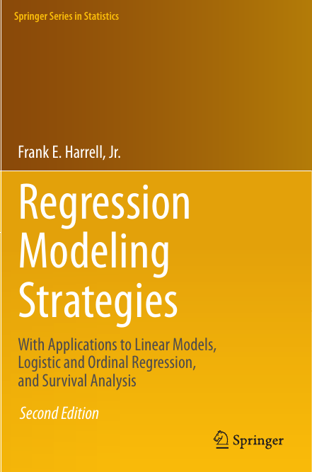

Regression Modeling Strategies

flowchart LR rms[Multivariable Model Development] --> est[Estimation] --> pred[Prediction] --> val[Validation]
Preface
A statistical model is a set of assumptions or constraints on possible features of the data generating process that permit us to compute estimates that we believe will properly represent or predict phenomena of interest. A regression model is a statistical model with indentifiable unknown parameters and specific constraints such as additivity allowing one to isolate the effects or predictive contributions of individual features. All regression models have assumptions or constraints that must approximately hold for (1) findings from model-based analyses not to have alternate explanations, (2) statistical power to detect associations be optimized, (3) estimates about unknowns to have optimum precision, and (4) predictions to be accurate.
There are four principal types of assumptions of regression models:
- linearity of effects of predictors
- additivity of effects of multiple predictors
- absolute distributional assumptions
- relative distributional assumptions
Absolute distributional assumptions are made for parametric regression models. These assume a specific distribution for the dependent variable \(Y\) given specific predictor \(X\) values. Relative distributional assumptions pertain to how the shape of the \(Y\) distribution for one set of \(X\) values relates to the shape for other values of \(X\) (sometimes called a proportionality assumption). Semiparametric regression models only make the second kind of distributional assumption.
This course emphasizes methods for assessing and satisfying assumption types 1, 2, and 4. Less attention is paid to assumption 3 due to the course’s emphasis on semiparametric models. Practical but powerful tools are presented for validating model assumptions, relaxing assumptions, and presenting model results. This course provides methods for estimating the shape of the relationship between predictors and response using the widely applicable method of augmenting the design matrix using restricted cubic splines. Even when assumptions are satisfied, overfitting can ruin a model’s predictive ability for future observations. Methods for data reduction will be introduced to deal with the common case where the number of potential predictors is large in comparison with the number of observations. Methods of model validation (bootstrap and cross-validation) will be covered, as well as quantifying predictive accuracy and predictor importance, modeling interaction surfaces, efficiently recovering partial covariable data by using multiple imputation, variable selection, overly influential observations, collinearity, and shrinkage, and a brief introduction to the R rms package for handling these problems. The methods covered will apply to almost any regression model, including ordinary least squares, longitudinal models, logistic regression models, ordinal regression, quantile regression, longitudinal data analysis, and survival models. Statistical models will be contrasted with machine learning so that the student can make an informed choice of predictive tools.
Target Audience
Those who may benefit include statisticians and persons from other quantitative disciplines who are interested in multivariable regression analysis of univariate and longitudinal responses; in developing, validating, and graphically describing multivariable predictive models; and in covariable adjustment in clinical trials and observational data analyses. The course will be of particular interest to applied statisticians and developers of applied statistics methodology, graduate students, clinical and pre-clinical biostatisticians, health services and outcomes researchers, econometricians, psychometricians, and quantitative epidemiologists. A good command of ordinary multiple regression is a prerequisite.
Learning Goals
Students will
- be able to fit multivariable regression models:
- accurately
- in a way the sample size will allow, without overfitting
- uncovering complex non–linear or non–additive relationships
- testing for and quantifying the association between one or more predictors and the response, with possible adjustment for other factors
- making maximum use of partial data rather than deleting observations containing missing variables
- be able to validate models for predictive accuracy and to detect overfitting and understand problems caused by overfitting.
- learn techniques of “safe data mining” in which significance levels, confidence limits, and measures such as \(R^2\) have the claimed properties.
- learn how to interpret fitted models using both parameter estimates and graphics
- learn about the advantages of semiparametric ordinal models for continuous \(Y\)
- learn about some of the differences between frequentist and Bayesian approaches to statistical modeling
- learn differences between machine learning and statistical models, and how to determine the better approach depending on the nature of the problem
Course Philosophy
- Modeling is the endeavor to transform data into information and information into either prediction or evidence about the data generating mechanism1
- Models are usually the best multivariable descriptive statistics
- adjust for one variable while displaying the association with \(Y\) and another variable
- multivariable descriptive statistics usually do not work when relating > 2 variables
- Satisfaction of model assumptions improves precision and increases statistical power
- Be aware of assumptions, especially those mattering the most
- It is more productive to make a model fit step by step (e.g., transformation estimation) than to postulate a simple model and find out what went wrong
- Model diagnostics are often not actionable
- Changing the model in reaction to observed patterns \(\uparrow\) uncertainty but is reflected by an apparent \(\downarrow\) in uncertainty
- Graphical methods should be married to formal inference
- Overfitting occurs frequently, so data reduction and model validation are important
- Software without multiple facilities for assessing and fixing model fit may only seem to be user-friendly
- Carefully fitting an improper model is better than badly fitting (and overfitting) a well-chosen one
- E.g. small \(N\) and overfitting vs. carefully formulated right hand side of model
- Methods which work for all types of regression models are the most valuable.
- In most research projects the cost of data collection far outweighs the cost of data analysis, so it is important to use the most efficient and accurate modeling techniques, to avoid categorizing continuous variables, and to not remove data from the estimation sample just to be able to validate the model.
- A $100 analysis can make a $1,000,000 study worthless.
- The bootstrap is a breakthrough for statistical modeling and model validation.
- Bayesian modeling is ready for prime time.
- Can incorporate non-data knowledge
- Provides full exact inferential tools even when penalizing \(\beta\)
- Rational way to account for model uncertainty
- Direct inference: evidence for all possible values of \(\beta\)
- More accurate way of dealing with missing data
- Using the data to guide the data analysis is almost as dangerous as not doing so.
- A good overall strategy is to decide how many degrees of freedom (i.e., number of regression parameters) can be "spent", where they should be spent, to spend them with no regrets. See the excellent text Clinical Prediction Models (Steyerberg, 2019)
1 Thanks to Drew Levy for ideas that greatly improved this section.
Key Messages of the Course
- A fundamental RMS principle is to aim for “methods that enable an analyst to develop models that will make accurate predictions of responses for future observations.” The RMS program (philosophy, methodology, tools) is dedicated to this.
- Phantom degrees of freedom : Information about the relationship between the dependent variable and candidate predictors introduced into model specification or model selection that is not later properly accounted for in the variance estimates and inference that goes into the ultimate report of analysis results. Put another way: assessments made in model development and then later elided that compromise the fidelity of standard errors, alpha, Type-I assertion probability \(\alpha\), etc. It is ‘phantom’ not only because it disappears, but also because this information continues to haunt the analysis, typically with overconfidence.
- \(\chi^{2}\) - df : The magnitude of predictive signal (which is proportional to \(n\)), chance-corrected by subtracting the expected amount of apparent explanatory information that occurs when there is no association (which is the degrees of freedom, i.e., effective number of parameters and is constant, i.e., does not depend on \(n\)).
- Chunk tests : Simultaneous or aggregate assessment of the importance (e.g., proportion of total variance explained) of collinear or dependent (e.g. related polynomial or interaction) terms or a group of non-collinear candidate predictors. Important for making coherent judgments.
- Spending df’s : Given a fixed amount of information in the data available for the analysis there is an ‘information budget’ that should be used judiciously: more important predictors should represented in a richer way (e.g. make the number of knots in splines proportional to the overall importance and complexity in the variable) than predictors that are less important. “Spending df’s with no regrets”: to preserve the operating characteristics of formal inference, once assessed in the modeling process even the less important candidate predictors should remain in view and not elided. All candidate predictors get a portion of the ‘df budget’, but to a varying extent based on their predictive potential.
- Partial plots: Pay special attention to partial plots. Partial plots reveal important information about where the information is in predicting the dependent variable. Partial plots elucidate the form and strength of individual predictors (independent of covariate effects) and can reveal the structure in the data and where the information is situated in the model.
- Be aware that cognitive biases — and an analysts’ interests, incentives and ethics — are all also a latent (often insidious) part of the overall analysis and reporting process. Be honest with others and yourself.
- Consider RMS as practicing a craft, and the RMS text book as the foundational treatise for the craft. Get, read–and periodically re-read–the textbook. There is a lot in the book not covered in the short course. Reading the text will help by providing students a comprehensive tool set, and reinforce the overall coherence in RMS. And there is also a lot of wisdom throughout the textbook.
Annotating the Notes
For information about adding annotations, comments, and questions inside the text click here: Comments
Symbols Used in the Right Margin of the Text
- in the right margin is a hyperlink to a YouTube video related to the subject.
- is a hyperlink to the discussion topic in
datamethods.orgdevoted to the specific topic. You can go directly to the discussion about chapternby going todatamethods.org/rmsn. - An audio player symbol indicates that narration elaborating on the notes is available for the section. Red letters and numbers in the right margin are cues referred to within the audio recordings.
- blog in the right margin is a link to a blog entry that further discusses the topic.
Other Information
- Discussion board for the overall course and hints for registering
- How to annotate and pose questions on web pages
- RMS main web site
- Twitter:
#rmscourse - Publicly available videos of the short course
- Four hour short course from useR!2022
- BBR course
- Go directly to a YouTube video for RMS Session
nby going tobit.ly/yt-rmsn - Study questions at the end of selected chapters
- Datamethods discussion board
- Statistical papers written for clinical researchers
- RMS overview and template for statistical analysis plan
- Statistical Thinking blog
- Glossary of statistical terms
- R Workflow
Acknowledgements
A number of individuals who are key to my career and to the development of RMS were acknowledged in the preface to the \(2^\text{nd}\) edition of Regression Modeling Strategies. In particular, David Hurst, the first Chair of the Department of Biostatistics at the University of Alabama in Birmingham, was singularly responsible for my entering the field of biostatistics. I also wish to thank Drew Levy and Madeline Bauer for critical reading of these course notes and providing a large number of constructive comments that made the notes significantly better.
R Packages
To be able to run all the examples in the book, install current versions of the following CRAN packages:
Hmisc, rms, data.table, nlme, rmsb, ggplot2
kableExtra, pcaPP, VGAM, MASS, leaps, rpartLicense

Regression Modeling Strategies Course is licensed under a Creative Commons Attribution-NonCommercial-ShareAlike 4.0 International License.
Based on a work at https://hbiostat.org/rmsc.
| Date | Sections | Changes |
|---|---|---|
| 2025-05-26 | sec-validate-bootcl | New subsubsection on confidence intervals for bootstrap bias-corrected accuracy measures, added limits in various validation and calibration examples |
| 2025-03-10 | sec-cony-checkass | Added usage of ordParallel and Olinks |
| 2025-03-01 | sec-ordsurv | New chapter on survival analysis with ordinal regression |
| 2025-02-23 | sec-parsurv-assess | Replaced some survplot()s with the new ggplot.npsurv method |
| 2025-01-03 | sec-genreg-repar | New section on reparameterizing models to make contrast coefficients and set up for profile likelihood |
| 2024-11-18 | sec-mle-qr | New section on preprocessing using QR and how to adjust the Hessian |
| 2024-11-14 | sec-relax.linear | Added link to new interactive demo |
| 2024-10-13 | sec-genreg-bayes | Expanded to include collapsible section on uncertainty in model performance metrix, plus problems with CLT and \(\delta\)-method |
| 2024-08-11 | Preface | Added Drew Levy’s key messages |
| 2024-08-02 | sec-val-bayes | New subsection on validation issues in Bayesian modeling |
| 2024-04-21 | sec-lrm-bayesex | Updated blrm from using keepsep to pcontrast |
| 2024-03-03 | sec-val-dr | New section of validatiion of data reduction |
| 2024-02-18 | sec-val-contrast | New section on contrasts |
| 2023-09-17 | sec-val-rev | New subsection on relative explained variation |
| 2023-08-02 | sec-missing-constraints | New subsection on constraints for imputed values |
| 2023-08-01 | sec-bacteremia | New chapter for bacteremia case study |
| 2023-07-28 | sec-intro-tep | Added paired tests |
| 2023-07-21 | sec-bodyfat | New chapter: linear model case study |
| 2023-07-14 | sec-mle-aic | New material and links for AIC/BIC |
| 2023-05-30 | sec-multivar-strategy | Added consideration of confounding |
| 2023-05-24 | sec-multivar-overfit | Better effective sample size for binary \(Y\) |
| 2023-05-20 | sec-lrcase1-pc, sec-impred-pc | Added graphical display of PC loadings |
| 2023-04-30 | sec-lrm | Many improvements in graphics, and code using data.table |
| 2023-04-29 | sec-genreg-gtrans | Add likelihood ratio tests |
| 2023-04-22 | sec-mle-hd | New section on Hauck-Donner effect ruining Wald statistics |
| 2023-04-22 | sec-lrm, sec-titanic-cd | Added new anova(..., test='LR') |
| 2023-03-06 | sec-cony | Several changes; replaced lattice graphics with ggplot2 and added validation with simultaneous multiple imputation |
| 2023-03-01 | sec-val-mival | New section on simultaneous validation and imputation |
| 2023-02-20 | sec-impred, sec-lrcase1 | Used new Hmisc 5.0-0 function princmp for principal components |
| 2023-02-12 | Used rms 6.5-0 to improve code, removing results=‘asis’ from chunk headers | |
| 2023-02-07 | Started moving study questions to end of chapters | |
| 2022-10-28 | sec-intro | 3 new flowcharts |
| 2022-10-28 | sec-intro-gof | New subsection of model uncertainty and GOF |
| 2022-09-16 | sec-mle-ci | Link to nice profile likelihood CI example |
Review Questions
- Consider inference from comparing central tendencies of two groups on a continuous response variable Y. What assumptions are you willing to make when selecting a statistical test? Why are you willing to make those assumptions?
- Consider the comparison of 5 groups on a continuous Y. Suppose you observe that two of the groups have a similar mean and the other three also have a similar sample mean. What is wrong with combining the two samples and combining the three samples, then comparing two means? How does this compare to stepwise variable selection?
- Name a specific statistical test for which we don’t have a corresponding statistical model
- Concerning a multi-group problem or a sequential testing problem what is the frequentist approach to multiplicity correction? The Bayesian approach?